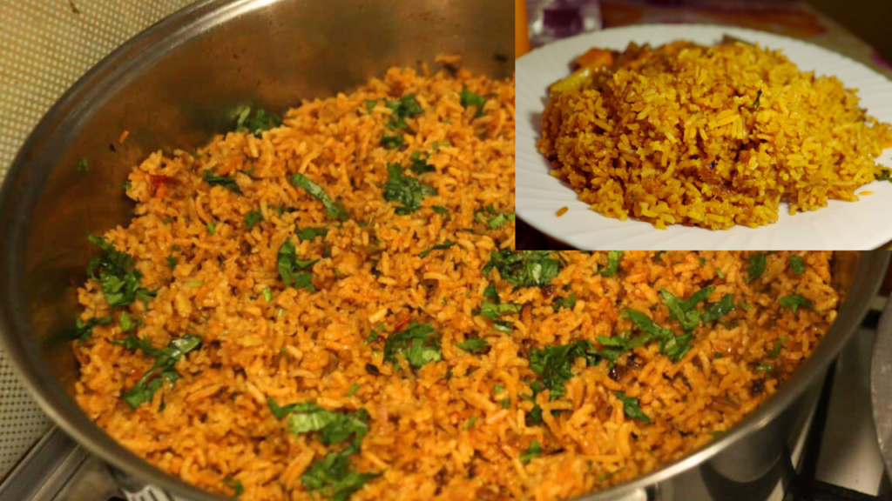
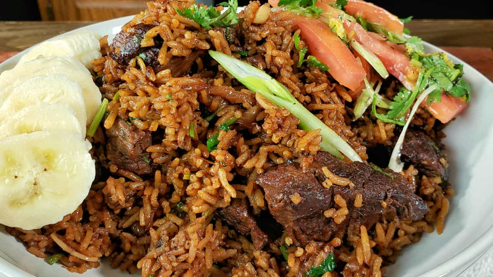

pillau


Indulge in the rich flavors of Kenyan cuisine with this mouthwatering Beef and Potato Pilau, as made by Kiano Moju.
This one-pot wonder is packed with tender beef, fluffy potatoes, and aromatic spices, making it the perfect comfort food for any occasion.
Ingredients
for 8 servings
pilau samala
- 2 teaspoons ground cumin
- 1 tablespoon paprika
- 1 teaspoon ground cardamom
- 1 teaspoon black pepper
- ¼ teaspoon ground cloves
pilau
- ¼ cup vegetable oil
- 2 medium red onions, thinly sliced
- 4 cloves garlic, minced
- 2 tablespoons ginger, minced
- 1 serrano chile, finely chopped
- 1 tablespoon pilau masala
- 2 beef stock cubes
- 1 cinnamon stick
- ¼ cup fresh cilantro, roughly chopped
- 1 lb beef sirloin, cubed
- 3 roma tomatoes, diced
- 1 lb potato, waxy, peeled and cut into 1 inch (2 cm) chunks
- 4 cups water
- 2 cups basmati rice
preparation
- Make the pilau masala: In a medium bowl, combine the cumin, paprika, cardamom, black pepper, and cloves. Set aside.
- Heat a large pot over medium-high heat. Add the oil and red onion and sauté for 10-15 minutes, until dark brown.
- Add the garlic, ginger, serrano chile, pilau masala, beef stock cubes, cinnamon stick, and cilantro. Cook for 1-2 minutes, until fragrant.
- Add the beef and cook until browned, about 8 minutes.
- Add the tomatoes and cook for 4-5 minutes, until the tomatoes have released their liquid.
- Add the potatoes and the water. Bring to a boil and cook for 10 minutes.
- Add the rice, stir, and cover. Reduce the heat to medium-low and cook for 20 minutes, until the rice is cooked and the liquid is absorbed.
- Enjoy!